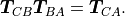

pytransform3d.transformations.concat¶
- pytransform3d.transformations.concat(A2B, B2C, strict_check=True, check=True)[source]¶
Concatenate transformations.
We use the extrinsic convention, which means that B2C is left-multiplied to A2B. In mathematical notation:

- Parameters:
- A2Barray-like, shape (4, 4)
Transform from frame A to frame B
- B2Carray-like, shape (4, 4)
Transform from frame B to frame C
- strict_checkbool, optional (default: True)
Raise a ValueError if the transformation matrix is not numerically close enough to a real transformation matrix. Otherwise we print a warning.
- checkbool, optional (default: True)
Check if transformation matrices are valid
- Returns:
- A2Carray-like, shape (4, 4)
Transform from frame A to frame C
See also
pytransform3d.trajectories.concat_one_to_manyConcatenate one transformation with multiple transformations.
pytransform3d.trajectories.concat_many_to_oneConcatenate multiple transformations with one.
pytransform3d.uncertainty.concat_globally_uncertain_transformsConcatenate two independent globally uncertain transformations.
pytransform3d.uncertainty.concat_locally_uncertain_transformsConcatenate two independent locally uncertain transformations.